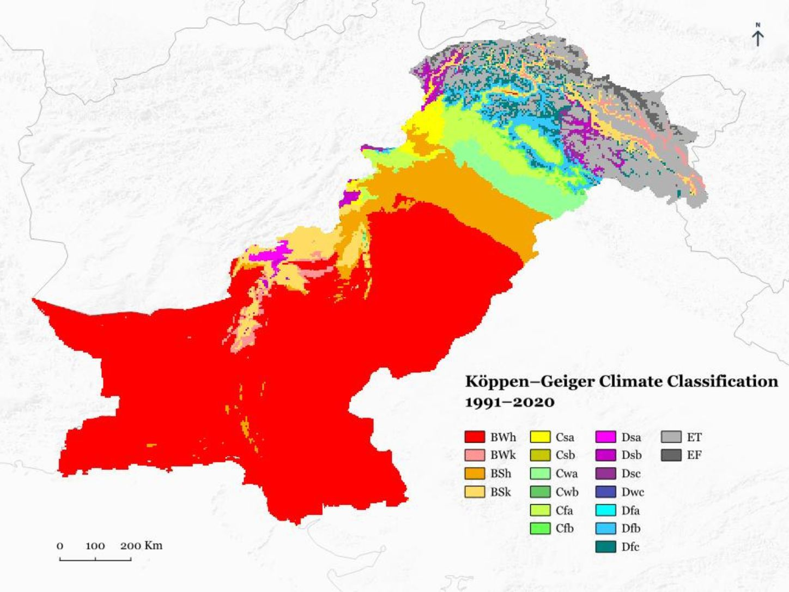
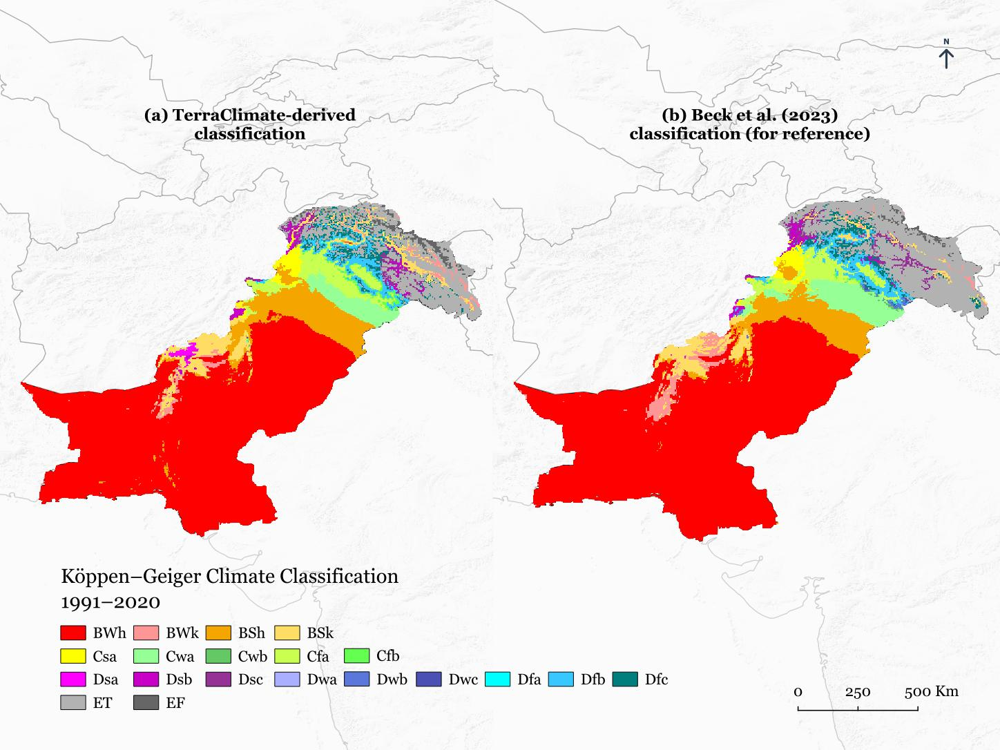
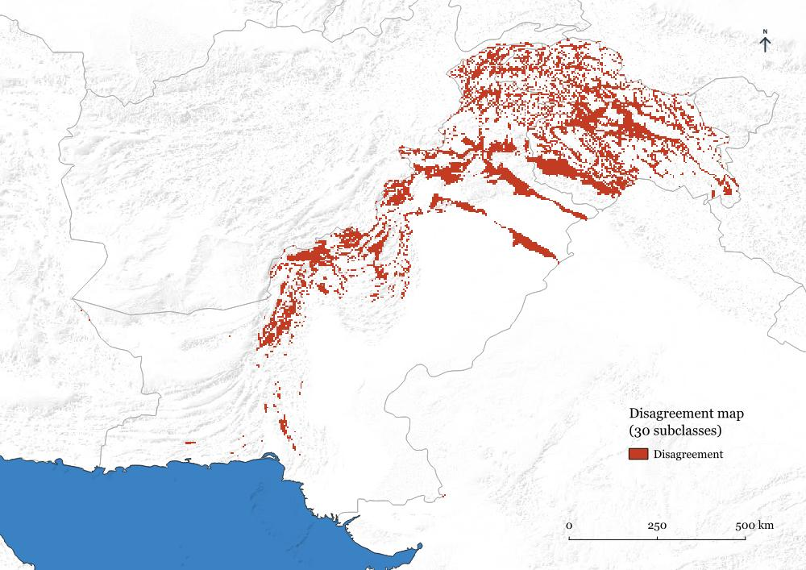

TerraClimate
Monthly temperature and precipitation for the 1991–2020 climate normal.

A 1991–2020 climate classification of Pakistan using TerraClimate data and the Peel et al. (2007) framework.
This project was developed while supporting a team at the Precision Agriculture Lab working on an update of agroecological zoning for Punjab which was published in 2019. As part of that work, I prepared a Köppen-Geiger climate classification for Pakistan using long-term temperature and precipitation data.
Thirty years of monthly TerraClimate data were summarized into the climatological variables required by the Peel et al. (2007) framework. The published classification rules were then implemented in R to assign Köppen-Geiger climate classes and map their distribution across Pakistan.
How do the major Köppen-Geiger climate classes vary across Pakistan based on the 1991–2020 climatology?
The workflow converted long-term temperature and precipitation data into the variables required by the Köppen-Geiger framework, applied the published classification rules, and compared the resulting map with the Beck et al. (2023) product.
Monthly temperature and precipitation for the 1991–2020 climate normal.
Monthly temperature and precipitation climatologies calculated over the 30-year period.
Annual and seasonal variables required by the Köppen-Geiger decision rules.
Peel et al. thresholds implemented in R using terra.
Cell-by-cell comparison with Beck et al. (2023) after grid alignment.
The TerraClimate-derived classification reproduced the main spatial pattern of the published Köppen-Geiger map, with differences concentrated near climatic boundaries and in the topographically complex northern regions.


The classification showed 86.0% area-weighted spatial agreement across the 30 Köppen-Geiger subclasses and 93.3% agreement across the five major climate groups when compared with Beck et al. (2023).
These values represent spatial agreement between two independently derived climate classifications, not classification accuracy against ground observations. Disagreement was concentrated mainly around climatic boundaries, including cold-to-polar transitions in the northern mountains and arid-to-temperate transitions farther south.